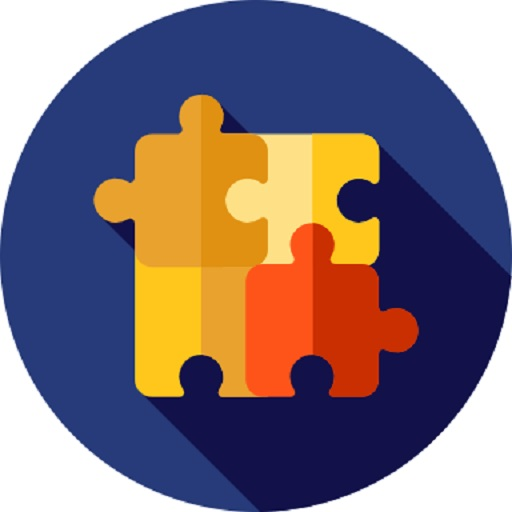

What is the My Puzzle Cabinet App?
 My Puzzle Cabinet is a digital haven for puzzle enthusiasts. It helps users to keep track of their puzzle collection, wishlist, and puzzle activities. Discover new puzzles and keep track of your progress in a fun and organized way.
How can the app be used?
Utilize the app to catalog your puzzle collection, mark puzzles as owned, wishlist, or completed. You can also rate your puzzles, write notes, and even track the number of pieces of each puzzle. The app serves as your personal puzzle companion.